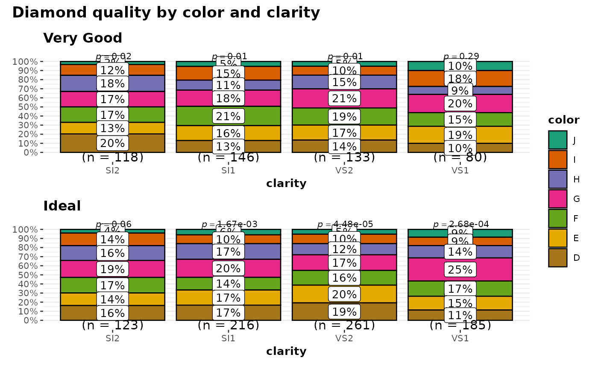

Helper function for ggstatsplot::ggbarstats to apply this function across
multiple levels of a given factor and combining the resulting plots using
ggstatsplot::combine_plots.
Arguments
- data
A dataframe (or a tibble) from which variables specified are to be taken. Other data types (e.g., matrix,table, array, etc.) will not be accepted.
- ...
Arguments passed on to
ggbarstatsxlabCustom text for the
xaxis label (Default:NULL, which will cause thexaxis label to be thexvariable).ylabCustom text for the
yaxis label (Default:NULL).xThe variable to use as the rows in the contingency table. Please note that if there are empty factor levels in your variable, they will be dropped.
yThe variable to use as the columns in the contingency table. Please note that if there are empty factor levels in your variable, they will be dropped. Default is
NULL. IfNULL, one-sample proportion test (a goodness of fit test) will be run for thexvariable. Otherwise an appropriate association test will be run. This argument can not beNULLforggbarstatsfunction.countsA string naming a variable in data containing counts, or
NULLif each row represents a single observation.typeA character specifying the type of statistical approach:
"parametric""nonparametric""robust""bayes"
You can specify just the initial letter.
pairedLogical indicating whether data came from a within-subjects or repeated measures design study (Default:
FALSE). IfTRUE, McNemar's test expression will be returned. IfFALSE, Pearson's chi-square test will be returned.results.subtitleDecides whether the results of statistical tests are to be displayed as a subtitle (Default:
TRUE). If set toFALSE, only the plot will be returned.labelCharacter decides what information needs to be displayed on the label in each pie slice. Possible options are
"percentage"(default),"counts","both".label.argsAdditional aesthetic arguments that will be passed to
geom_label.kNumber of digits after decimal point (should be an integer) (Default:
k = 2L).proportion.testDecides whether proportion test for
xvariable is to be carried out for each level ofy. Defaults toresults.subtitle. Inggbarstats, only p-values from this test will be displayed.perc.kNumeric that decides number of decimal places for percentage labels (Default:
0L).bf.messageLogical that decides whether to display Bayes Factor in favor of the null hypothesis. This argument is relevant only for parametric test (Default:
TRUE).ratioA vector of proportions: the expected proportions for the proportion test (should sum to 1). Default is
NULL, which means the null is equal theoretical proportions across the levels of the nominal variable. This means if there are two levels this will beratio = c(0.5,0.5)or if there are four levels this will beratio = c(0.25,0.25,0.25,0.25), etc.conf.levelScalar between
0and1. If unspecified, the defaults return95%confidence/credible intervals (0.95).sampling.planCharacter describing the sampling plan. Possible options are
"indepMulti"(independent multinomial; default),"poisson","jointMulti"(joint multinomial),"hypergeom"(hypergeometric). For more, see?BayesFactor::contingencyTableBF().fixed.marginFor the independent multinomial sampling plan, which margin is fixed (
"rows"or"cols"). Defaults to"rows".prior.concentrationSpecifies the prior concentration parameter, set to
1by default. It indexes the expected deviation from the null hypothesis under the alternative, and corresponds to Gunel and Dickey's (1974)"a"parameter.subtitleThe text for the plot subtitle. Will work only if
results.subtitle = FALSE.captionThe text for the plot caption.
legend.titleTitle text for the legend.
ggthemeA
{ggplot2}theme. Default value isggstatsplot::theme_ggstatsplot(). Any of the{ggplot2}themes (e.g.,theme_bw()), or themes from extension packages are allowed (e.g.,ggthemes::theme_fivethirtyeight(),hrbrthemes::theme_ipsum_ps(), etc.).packageName of the package from which the given palette is to be extracted. The available palettes and packages can be checked by running
View(paletteer::palettes_d_names).paletteName of the package from which the given palette is to be extracted. The available palettes and packages can be checked by running
View(paletteer::palettes_d_names).ggplot.componentA
ggplotcomponent to be added to the plot prepared by{ggstatsplot}. This argument is primarily helpful forgrouped_variants of all primary functions. Default isNULL. The argument should be entered as a{ggplot2}function or a list of{ggplot2}functions.
- grouping.var
A single grouping variable.
- output
Character that describes what is to be returned: can be
"plot"(default) or"subtitle"or"caption". Setting this to"subtitle"will return the expression containing statistical results. If you have setresults.subtitle = FALSE, then this will return aNULL. Setting this to"caption"will return the expression containing details about Bayes Factor analysis, but valid only whentype = "parametric"andbf.message = TRUE, otherwise this will return aNULL.- plotgrid.args
A
listof additional arguments passed topatchwork::wrap_plots, except forguidesargument which is already separately specified here.- annotation.args
A
listof additional arguments passed topatchwork::plot_annotation.
Details
For details, see: https://indrajeetpatil.github.io/ggstatsplot/articles/web_only/ggpiestats.html
Examples
# \donttest{
# for reproducibility
set.seed(123)
library(ggstatsplot)
library(dplyr, warn.conflicts = FALSE)
# let's create a smaller dataframe
diamonds_short <- ggplot2::diamonds %>%
filter(cut %in% c("Very Good", "Ideal")) %>%
filter(clarity %in% c("SI1", "SI2", "VS1", "VS2")) %>%
sample_frac(size = 0.05)
# plot
grouped_ggbarstats(
data = diamonds_short,
x = color,
y = clarity,
grouping.var = cut,
plotgrid.args = list(nrow = 2)
)

# }